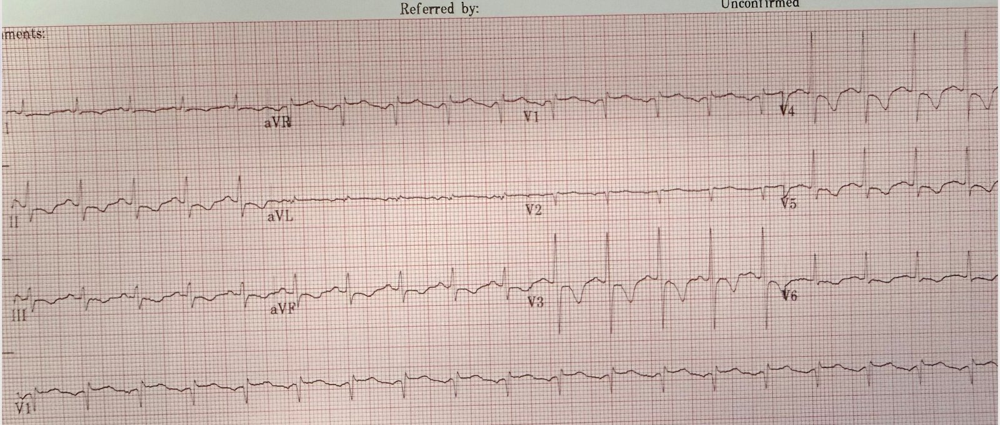
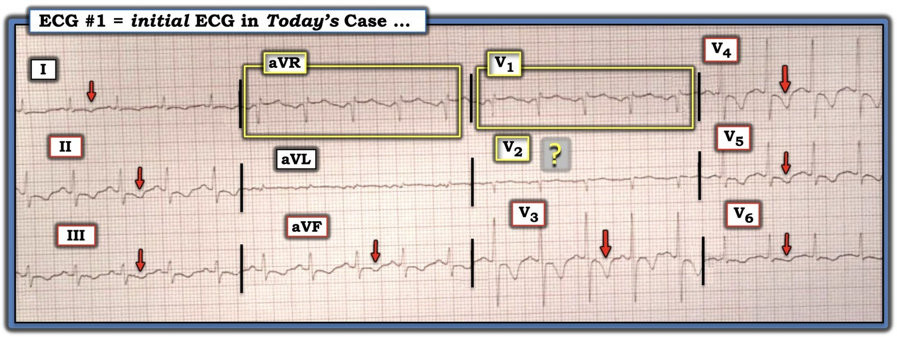

06/03/2026 — Rát ngực dữ dội ở một phụ nữ 40 mấy tuổi
Bản dịch tiếng Việt của bài "Intense burning chest pain in a 40-something woman" – Dr. Smith’s ECG Blog. Giữ nguyên toàn bộ 2 hình ảnh và 1 video của bản gốc.
Ca này do một cựu bác sĩ nội trú của tôi gửi đến:
- Một phụ nữ 40 mấy tuổi, trước đây khỏe mạnh và “rất cân đối, khỏe khoắn”, đến một bệnh viện nhỏ không có khả năng làm PCI.
Ngoài lề: điều tồi tệ nhất bạn có thể là khi bị nhồi máu cơ tim chính là một phụ nữ trẻ. Một vài ca khác:
- 30-something woman with a HEART score of zero, EDACS of 2, computer “Normal” ECG, and initial troponin < Limit of Detection (Phụ nữ ba mươi mấy tuổi, điểm HEART bằng không, EDACS bằng hai, máy tính đọc điện tâm đồ “Bình thường”, và troponin ban đầu dưới giới hạn phát hiện)
- The worst thing you can be when you have this ECG is to be a young woman (Điều tồi tệ nhất khi bạn có điện tâm đồ này là bạn lại là một phụ nữ trẻ)
= = =
Bệnh nhân hôm nay đến viện sau vài ngày rát ngực từng cơn, nay rát ngực “dữ dội” liên tục. Không thấy đề cập đến khó thở. Điện tâm đồ này được ghi trong lúc đau:


— Bạn nghĩ sao? —
= = =
= = =
Ca này được gửi cho tôi và, mặc dù có ST chênh xuống và sóng T đảo ngược lan tỏa gợi ý thiếu máu cục bộ dưới nội tâm mạc lan tỏa, tôi không thấy bằng chứng của OMI tắc hoàn toàn. Tuy vậy, tôi đã nhắn lại rằng “do điện tâm đồ có thiếu máu cục bộ kèm đau ngực liên tục, bệnh nhân cần vào phòng thông tim ngay.”
Queen of Hearts cũng không thấy OMI.
= = =
Cơn rát ngực lúc tăng lúc giảm rồi trở nên liên tục là cực kỳ điển hình cho ACS/OMI, và việc không có khó thở sẽ là bất thường trong thuyên tắc phổi (PE).
Tuy nhiên, nhịp nhanh là bất thường trong ACS trừ khi có sốc tim, hoặc sắp sốc. Vì vậy, khảo sát thuyên tắc phổi là hợp lý. Và họ đã làm chụp CT mạch phổi.
- Kết quả âm tính với PE, nhưng cho thấy cơ tim bị thiếu máu cục bộ:
Diễn giải: Có những vùng dưới nội tâm mạc bị giảm tưới máu (tối màu, thuốc cản quang không tới được ==> thiếu máu cục bộ).
= = =
Ca bệnh tiếp diễn:
Troponin độ nhạy cao đầu tiên (I hay T? — không quan trọng) — ở mức “hàng 100”
Bác sĩ ở bệnh viện nhỏ đã kích hoạt phòng thông tim tại trung tâm tiếp nhận chuyển tuyến. Trung tâm tiếp nhận trả lời rằng ca này không đáp ứng tiêu chuẩn kích hoạt phòng thông tim cấp cứu của họ.
- Bệnh nhân được chuyển đến bệnh viện tiếp nhận, đang dùng heparin, với chẩn đoán “NSTEMI” (một chẩn đoán vô giá trị) và được lên lịch thông tim vào ngày hôm sau.
Smith: Ngay cả khi bạn không tin điện tâm đồ có thiếu máu cục bộ (mà chắc chắn là có) — troponin tăng này xác lập dứt khoát nhồi máu cơ tim cấp ở một bệnh nhân không có tiền sử bệnh tim. Một bệnh nhân như vậy, với đau ngực dai dẳng, phải được đưa vào phòng thông tim cấp cứu! Các hướng dẫn ACC/AHA bắt buộc điều này, nhưng nó chỉ được tuân thủ trong 6% số trường hợp!
- Trước khi kịp được thông tim, bệnh nhân ngừng tim và phải dùng ECMO. Chụp mạch vành cho thấy LAD tắc 100% (tôi không biết là đoạn gần hay đoạn giữa). Tôi không chắc bệnh nhân có sống sót hay không.
= = =
Cựu bác sĩ nội trú của tôi viết:
- “Kinh nghiệm của tôi với các bác sĩ tim mạch (gần như ở khắp nơi) đối với những điện tâm đồ không khớp kinh điển với STEMI, hoặc không đáp ứng đầy đủ yêu cầu thông tim của họ — là có sự chậm trễ lớn. Khi tôi nhắc lại mối lo ngại của mình hoặc đưa ra những gì tôi xem là bằng chứng của tưới máu kém (như phim CT ở trên), tôi gặp phải sự kháng cự. Tôi cần học cách nói ngôn ngữ của họ tốt hơn.”
= = =
Đây là một ca mà chính các hướng dẫn của họ sẽ nói rằng bệnh nhân phải vào phòng thông tim cấp cứu. Nhưng y văn cho thấy các bác sĩ tim mạch chỉ tuân thủ hướng dẫn này trong 6% số trường hợp.
- [Lupu L, Taha L, Banai A, và cs. Immediate and early percutaneous coronary intervention in very high-risk and high-risk non-ST segment elevation myocardial infarction patients.
- Clin Cardiol [Internet] 2022;Truy cập tại: https://onlinelibrary.wiley.com/doi/10.1002/clc.23781].)
Hơn nữa, các hướng dẫn này, vốn dành cho NSTEMI “nguy cơ cao”, phần lớn dựa vào chẩn đoán nhồi máu cơ tim (NSTEMI) bằng troponin, hoặc một mức nghi ngờ lâm sàng rất cao. Chúng không dựa vào việc đọc điện tâm đồ tinh tế để nhận ra tắc mạch, điều vốn sẽ dẫn đến tái tưới máu rất nhanh và cơ hội tốt nhất cho một kết cục tốt.
= = =
======================================
BÌNH LUẬN CỦA TÔI, bởi KEN GRAUER, MD (6/3/2026):
Xem xét các ca “trên giấy” sau khi sự việc đã xảy ra không phải là việc dễ dàng. Do không có mặt tại hiện trường nơi bệnh nhân đến khám và điều trị — chúng ta thường thiếu những thông tin then chốt khó (nếu không nói là không thể) khôi phục lại từ việc xem lại hồ sơ bệnh án giấy.
- Các bình luận dưới đây của tôi phản ánh góc nhìn nêu trên.
= = =
Về CA BỆNH hôm nay:
Tôi nhận được điện tâm đồ trong Hình 1 — và được biết đó là của một phụ nữ 40 mấy tuổi, trước đây khỏe mạnh, đến viện vì “rát ngực” vài ngày. Bệnh nhân ghi nhận “rát ngực dữ dội” vào thời điểm điện tâm đồ ban đầu này được ghi.
- Xin nhấn mạnh: Có nhiều chi tiết về ca hôm nay liên quan đến việc gì đã xảy ra khi nào, và trong hoàn cảnh lâm sàng nào — mà chúng ta đơn giản là không biết. Vì vậy — các bình luận của tôi không nhắm vào đội tim mạch hay đội cấp cứu đã tiếp nhận xử trí bệnh nhân này — mà chỉ đơn thuần phản ánh Suy nghĩ của tôi về cách tôi có thể tiếp cận ca này với lượng thông tin hạn chế được cung cấp (mà không nhất thiết biết liệu chuỗi hành động tôi đề xuất có được thực hiện hay không).
- Ví dụ: Bệnh nhân hôm nay đến viện với nhịp nhanh xoang tương đối nhanh. Thế nhưng thông tin được cung cấp không hề đề cập Tại sao bệnh nhân này có thể bị nhịp nhanh xoang nhanh, vốn là một nhịp tim tương đối ít gặp trong nhồi máu cơ tim cấp không biến chứng (tức là, Không có dấu hiệu sinh tồn hay dấu hiệu thăm khám liên quan nào được cung cấp — không có chỉ báo nào về huyết áp hay tần số thở của bệnh nhân — và không đề cập đến khả năng suy tim hay tổn thương phổi).
- Điểm MẤU CHỐT: Bất kỳ cách tiếp cận nào được chọn để đánh giá bệnh nhân này cũng cần nhắm tới việc sớm nhất có thể tìm ra nguyên nhân của nhịp nhanh xoang.
= = =
Diễn giải của tôi về điện tâm đồ #1 dựa trên bệnh sử nêu trên:
- Như đã nêu ở trên — nhịp của điện tâm đồ trong Hình 1 là nhịp nhanh xoang với tần số ~115/phút.
- Về các khoảng — khoảng PR bình thường và QRS hẹp. Xét đến tần số nhanh — QTc ít nhất là kéo dài ở mức giới hạn.
- Trục mặt phẳng trán bình thường (khoảng +60 độ).
- Không có lớn buồng tim.
- LƯU Ý: Tôi nghi ngờ rằng điện cực của chuyển đạo V1 (và có lẽ cả chuyển đạo V2) đã được đặt quá cao trên ngực vì: i) Có một phức bộ r’ ở chuyển đạo V1 ở bệnh nhân này mà không có dấu hiệu thực sự nào khác của blốc nhánh phải không hoàn toàn (chỉ thấy một sóng s tận cực nhỏ ở các chuyển đạo bên I,V6); — ii) Sóng P ở chuyển đạo V1 âm hoàn toàn (với gợi ý một sóng P âm cũng ở V2); — iii) Hình thái QRST ở chuyển đạo V1 trông giống hệt phức bộ QRST ở chuyển đạo aVR; — và, iv) QRS rất nhỏ ở chuyển đạo V2 đơn giản là trông “lạc chỗ” — vì nó bị kẹp giữa phức bộ Qr ở chuyển đạo V1 — và phức bộ sóng R=S lớn đến bất ngờ kèm sóng T âm sâu xuất hiện đột ngột ở chuyển đạo V3 (Xem PHẦN BỔ SUNG bên dưới để biết thêm về cách nhanh chóng nhận ra việc đặt điện cực V1,V2 quá cao — cũng như LINK này tới Menu phía trên ở mọi trang của Dr. Smith’s ECG Blog để xem thêm các ví dụ về đặt sai V1,V2 và các “Sự cố kỹ thuật” (Technical Misadventures) khác).
- Điểm MẤU CHỐT: Như tôi sẽ bàn ngay sau đây — việc các điện cực chuyển đạo V1,V2 có lẽ bị đặt sai có ý nghĩa lâm sàng đối với việc đọc tối ưu điện tâm đồ hôm nay!
Về các thay đổi sóng ST-T trong Hình 1:
- Có sóng T đảo ngược đối xứng lan tỏa trên điện tâm đồ hôm nay (các mũi tên ĐỎ trong Hình 1). Các sóng T này đặc biệt sâu ở các chuyển đạo trước V3,V4.
- Và — Chúng ta không biết liệu có thể cũng có sóng T đảo ngược bắt đầu sớm ngay từ chuyển đạo V1,V2 hay không — vì các điện cực V1,V2 nhiều khả năng đã bị đặt không đúng.
= = =
Hình 1: Điện tâm đồ của ca hôm nay — ghi từ một phụ nữ 40 mấy tuổi trong lúc “rát ngực dữ dội”.


= = =
Nhận định của tôi về điện tâm đồ hôm nay trong Hình 1:
Đứng thuần túy từ góc độ đọc điện tâm đồ — tôi không chắc chắn liệu bản ghi trong Hình 1 gợi ý nhiều hơn đến một quá trình thiếu máu cục bộ cấp — hay — một PE cấp lớn (thuyên tắc phổi).
- Sóng T đảo ngược lan tỏa kèm ST chênh lên ở chuyển đạo aVR có thể phù hợp với DSI (thiếu máu cục bộ dưới nội tâm mạc lan tỏa) — hoặc thậm chí sóng T tái tưới máu sau OMI LAD.
- Mặt khác — sóng T đảo ngược ở thành dưới và thành trước ở bệnh nhân nhịp nhanh xoang này có thể là biểu hiện “tăng gánh” thất phải của một bệnh nhân bị PE cấp lớn (dù triệu chứng duy nhất được nêu trong bệnh sử là “rát ngực dữ dội” — và dù sóng T đảo ngược lan ra tới các chuyển đạo bên I và V6, điều ít gặp hơn với “tăng gánh” thất phải).
- Và — Chúng ta không biết liệu có thể cũng có sóng T đảo ngược bắt đầu sớm ngay từ chuyển đạo V1,V2 hay không — vì các điện cực V1,V2 nhiều khả năng đã bị đặt không đúng.
= = =
Diễn biến sự việc:
- Bệnh nhân hôm nay ban đầu được khám tại một bệnh viện nhỏ ở vùng xa. Dựa trên điện tâm đồ ban đầu — phòng thông tim đã được kích hoạt (với ca thông tim này sẽ được thực hiện khi bệnh nhân đến bệnh viện tiếp nhận). Tuy vậy — các bác sĩ ở bệnh viện tiếp nhận sau đó dường như đã đổi ý và từ chối thông tim cấp cứu vì điện tâm đồ ban đầu này “không đáp ứng tiêu chuẩn kích hoạt phòng thông tim cấp cứu”. Thay vào đó, họ hoãn thông tim đến ngày hôm sau.
- Kết quả troponin lần 1 trả về “ở mức hàng trăm”.
- Mối lo ngại ở bệnh viện nhỏ về khả năng PE cấp dường như lớn đến mức — đã dành thời gian để thực hiện chụp CT mạch phổi trước khi chuyển bệnh nhân đến bệnh viện tiếp nhận.
- Và rồi, trước khi ca thông tim ngày hôm sau kịp được thực hiện tại bệnh viện tiếp nhận — bệnh nhân bị ngừng tim phổi.
- Đáng tiếc — Chúng tôi không có thêm thông tin theo dõi . . .
= = =
Những việc đơn giản nên làm trong quá trình xử trí:
Phải thừa nhận là nhìn lại ca hôm nay qua “kính nhìn hồi cứu” (tôi hoàn toàn thừa nhận rằng còn thiếu nhiều thông tin lâm sàng) — có vẻ chẩn đoán phân biệt chính là giữa một quá trình thiếu máu cục bộ cấp — với — một PE cấp lớn.
- Thời gian là yếu tố then chốt. Có thể — siêu âm tim tại giường do một người thực hiện có kỹ năng đã có thể cho chúng ta biết trong vòng vài phút (rất lâu trước khi có kết quả trả về từ chụp CT mạch phổi) — liệu thất phải có giãn hay không. Nếu giãn — thì chúng ta sẽ biết trong vòng vài phút rằng chúng ta gần như chắc chắn đang đối mặt với một PE cấp lớn.
- Và nếu sóng T đảo ngược lan tỏa, rõ rệt kèm nhịp nhanh xoang là hậu quả của PE cấp — thì các dấu hiệu điện tâm đồ này sẽ gợi ý mạnh rằng PE cấp này là dưới diện rộng hoặc diện rộng (các PE nhỏ hơn hiếm khi gây “tăng gánh” thất phải lan tỏa với nhịp nhanh như vậy).
- Nếu thay vào đó, sóng T đảo ngược rõ rệt ở các chuyển đạo ngực là do tắc LAD cấp — siêu âm tim tại giường có thể đã nhanh chóng cho chúng ta câu trả lời này bằng cách phát hiện một rối loạn vận động thành khu trú.
- Nhưng ngay cả trước khi làm siêu âm tim tại giường — một lần thăm khám thực thể ngắn gọn bệnh nhân có thể đã mang lại nhiều thông tin. Nếu bệnh nhân này không thở nhanh — thì chúng ta sẽ biết trong vòng vài giây rằng bệnh nhân rất khó có khả năng bị PE cấp dưới diện rộng hoặc diện rộng.
- LƯU Ý: Theo kinh nghiệm của tôi, dấu hiệu sinh tồn hay bị bỏ sót nhất — là ghi nhận tần số thở chính xác. Bác sĩ điều trị cần dành ít nhất 20 giây (không phải chép lại từ ghi chép của điều dưỡng) — để quan sát bệnh nhân nhằm đảm bảo đếm chính xác bệnh nhân đang thở nhanh đến mức nào (chứ không chỉ đơn giản ghi 12-15/phút). Qua nhiều năm — tôi đã rất ngạc nhiên khi thấy bệnh nhân có thể thở êm đến mức nào dù tần số thở trên 30/phút (điều mà trong ca hôm nay — sẽ là dữ kiện then chốt phù hợp với PE cấp hoặc suy tim).
- Điều cốt lõi: Ngay khi siêu âm tim tại giường cho thấy PE dưới diện rộng hoặc diện rộng là ít khả năng (việc này nên hoàn tất trong vòng vài phút) — Chúng ta còn lại một điện tâm đồ thiếu máu cục bộ cấp ở một bệnh nhân có nhịp nhanh đáng lo ngại — troponin ban đầu “ở mức hàng trăm” — và một bệnh nhân có triệu chứng dai dẳng “rát ngực dữ dội”. Bệnh nhân này cần vào phòng thông tim.
= = =
= = =
Phần bổ sung: Nhận biết việc đặt sai V1,V2 …
Dù tần suất lỗi đặt điện cực cao đến mức đáng báo động — “tin tốt” là rất DỄ nghi ngờ khi nào nhiều khả năng chuyển đạo V1/V2 bị đặt sai! Có 3 Manh mối cần tìm:
Hãy nghi ngờ chuyển đạo V1 và/hoặc V2 đã được đặt quá cao 1 hoặc 2 khoang liên sườn trên ngực NẾU có một hoặc nhiều manh mối sau đây:
- Manh mối #1 — Nếu có một sóng r’ ở chuyển đạo V1 và/hoặc V2, đặc biệt nếu không có dấu hiệu còn lại của blốc nhánh phải không hoàn toàn (tức là, sóng s tận ở các chuyển đạo bên I và V6).
- Manh mối #2 — Nếu sóng P ở chuyển đạo V1 và/hoặc V2 có một thành phần âm đáng kể.
- Manh mối #3 — Nếu hình dạng của sóng P, phức bộ QRS và sóng ST-T ở chuyển đạo V1 và V2 trông rất giống sóng P, phức bộ QRS và sóng ST-T ở chuyển đạo aVR.
LƯU Ý: Dù 3 Manh mối trên hữu ích đến đâu trong việc nhanh chóng nghi ngờ đặt quá cao chuyển đạo V1 và/hoặc V2 — các manh mối này không phải lúc nào cũng đúng. Có những lúc dù chúng ta nghi ngờ khi nhìn điện tâm đồ rằng chuyển đạo V1 và V2 đã được đặt quá cao — thì thực tế lại không phải như vậy. Ví dụ: i) Có thể thực sự có blốc nhánh phải không hoàn toàn (gây ra sóng r’ tận ở chuyển đạo V1 và/hoặc V2); — ii) Một sóng P âm hoàn toàn, tương đối lớn đôi khi có thể thấy ở chuyển đạo V1,V2 như một dấu hiệu bình thường — hoặc — bệnh nhân có thể thực sự bị lớn nhĩ trái; — iii) Sự khác biệt về thể trạng và giải phẫu thành ngực có thể tạo ra các dấu hiệu điện tâm đồ bất thường; —và/hoặc — iv) Bệnh nhân có thể thực sự đã từng bị nhồi máu vách trước đó.
- Vì vậy, mục tiêu của tôi khi trình bày 3 manh mối này — là chúng gợi ý khi nào nên nghi ngờ rằng hình dạng bất thường ở các chuyển đạo trước có thể được giải thích tốt nhất bởi việc đặt chuyển đạo V1 và/hoặc V2 quá cao.
- Rất DỄ để kiểm tra mối nghi ngờ của bạn. Chỉ cần xác nhận vị trí đặt các chuyển đạo ngực là đúng — rồi GHI LẠI điện tâm đồ!
= = =
= = =